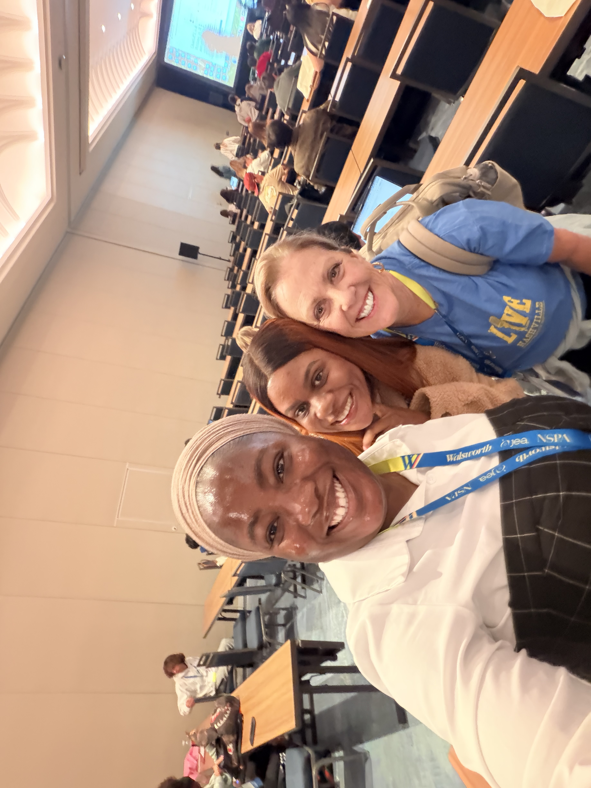
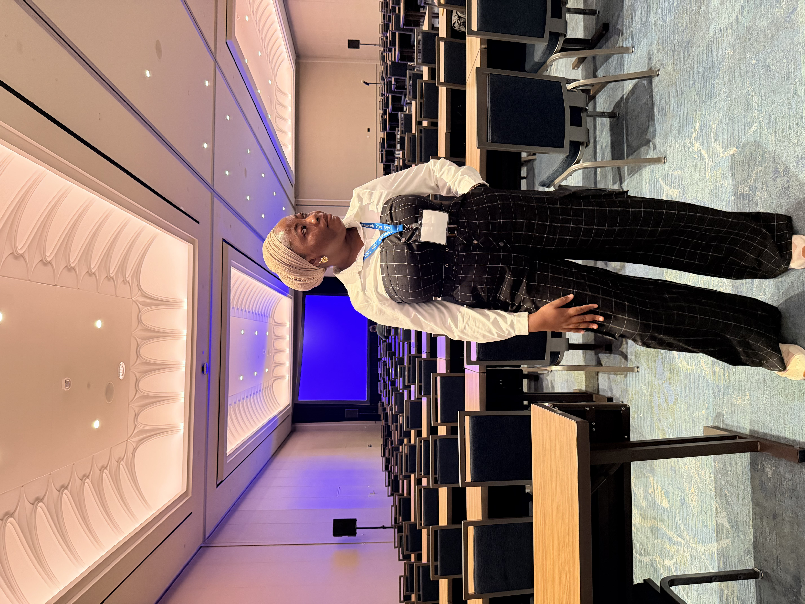
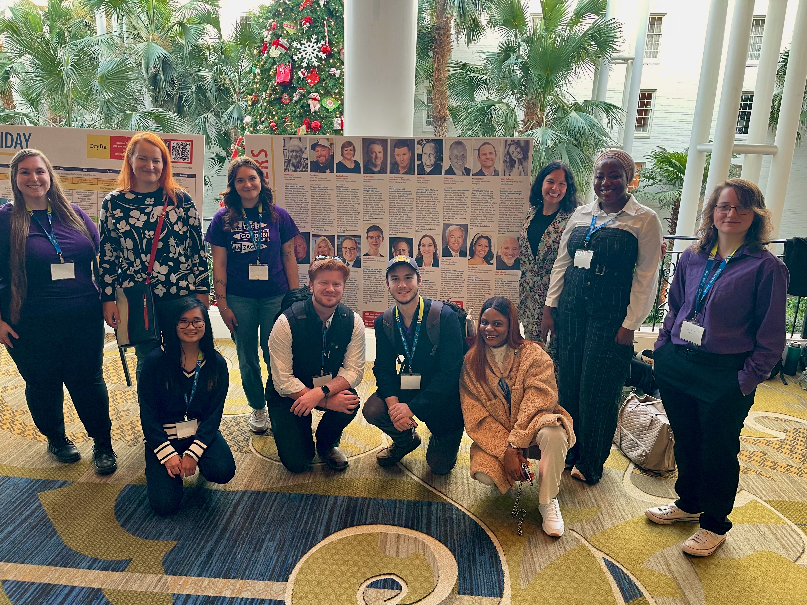

Communication is Not Neutral: Equity, Access, and Ethical
Responsibility in Digital and Institutional Systems
Master's Portfolio Thesis Statement · English Dept., Tennessee
Technological University
01 — About
0Years Experience
0Research Publications
0Conference Talks
Communicating complexity with clarity.
I am a dedicated technical communication professional currently
pursuing my
M.A. in English (Professional & Technical
Communication)
at Tennessee Technological University, with an expected
graduation in August 2026.
My expertise spans content development, educational programming,
and human-centered communication. I have a proven track record
of designing clear, accessible documentation and creating
engaging educational content that fosters leadership development
and community engagement.
With experience in teaching, content creation, and public
information development, I bring a unique perspective to
technical communication — one that prioritises clarity, user
experience, and meaningful engagement at the intersection of
language, technology, and equity.
I am actively involved in the technical communication community
through conference presentations, research publications, and
continuous professional development. My scholarly focus centres
on AI governance, digital accessibility, and the ethical
dimensions of communication in institutional systems.
My career in technical communication, education, and content
development
Fall 2025Current
Program Development and Community Engagement Associate
Office of Intercultural Affairs · Tennessee Technological
University
Designed and implemented leadership development programming
focused on communication, mentorship, and community engagement
Created weekly educational content for mentors and mentees to
develop communication skills and support leadership growth
Assessed participant engagement and feedback to continuously
adapt program activities, ensuring relevance and effectiveness
Aug 2024 – PresentAcademic
Graduate Teaching Assistant
Tennessee Technological University
Design and deliver course content, including lectures,
discussions, and writing assignments
Facilitate class engagement through interactive activities and
collaborative exercises
Provide constructive feedback on student drafts, focusing on
clarity, coherence, and grammar
Maintain organised tracking of student progress,
documentation, and follow-up communications
Offer one-on-one support to students, helping them develop
ideas and refine arguments
Aug 2023 – Aug 2024Industry
Customer Support Representative
Field Nation
Handled incoming customer calls and service requests,
resolving issues or forwarding to appropriate teams
Maintained accurate records of all customer interactions using
CRM tools
Assisted in collecting and organising customer feedback to
improve support materials
Supported team coordination through clear cross-departmental
communication
Jul 2022 – Jul 2023Government
Information Developer
Ministry of Information and Strategy, Nigeria
Created and revised official communications including press
releases, briefing notes, and public service announcements
Proofread and edited all communications to meet government
style guides, achieving 95% error-free published materials
Contributed to public information campaigns and awareness
initiatives, including developing visual aids
Fall 2025
Program Development & Community Engagement Associate
Office of Intercultural Affairs · Tennessee Tech
Aug 2024 – Present
Graduate Teaching Assistant
Tennessee Technological University
Aug 2023 – Aug 2024
Customer Support Representative
Field Nation
Jul 2022 – Jul 2023
Information Developer
Ministry of Information and Strategy, Nigeria
03 — Master's Portfolio
Master's Portfolio
A curated collection of graduate work exploring equity, access, and
ethical responsibility in communication
📚
Portfolio Theme
This portfolio, titled
"Communication is Not Neutral: Equity, Access, and Ethical
Responsibility in Digital and Institutional Systems", showcases my work as a graduate student in English with a
concentration in Professional and Technical Communication at
Tennessee Technological University. Each artefact demonstrates
my growth as a communicator, scholar, and practitioner committed
to making complex information accessible and equitable.
This prospectus outlines the selection of projects from my
coursework that reflect my development in analytical
thinking and clear communication. It serves as the
analytical foundation for my future professional goals in
technical communication.
Explores how communication training helps healthcare
providers address technological access gaps. Through this
work, I strengthened my skills in research, analysis, and
human-centered writing.
A multimodal exploration of Joy Buolamwini's "coded gaze."
This project demonstrates my ability to translate research
into engaging visual formats for diverse audiences.
Creating purposeful, user-friendly documentation for a
real-world client. This required intense audience awareness
and attention to detail to meet practical needs.
An in-depth analysis of my graduate learning process,
addressing the challenges, insights, and milestones achieved
during my time at Tennessee Tech.
04 — Research
Publications & Scholarship
My contributions to academic research in technical communication,
AI, and digital equity
Book Chapter · Forthcoming2025
"Beyond refusal: 'Co-intelligence' and 'Coded Gaze' as AI
pedagogies"
Ramler, M., Askins, S., Azeez, N., Barnes, K.,
Begum, A., Grubbs, N. G.
In:
AI in Technical Communication: Emerging Technologies and
Pedagogies.
Routledge.
This book chapter examines two pedagogical frameworks for
teaching AI literacy in technical communication classrooms:
Ethan Mollick's concept of "co-intelligence" (embracing AI
as a collaborative partner) and Joy Buolamwini's "coded
gaze" (foregrounding algorithmic bias and racial inequity).
The chapter argues that moving beyond simple AI refusal
towards critical, reflexive engagement produces more
ethically literate communicators.
AI PedagogyTechnical Communication
Journal Article2025
"Artificial intelligence governance: Legal and public policy
implications for data privacy and algorithmic accountability"
Ighofiomoni, M. O., Awoyomi, O. O., Popoola, R., Ahaiwe, E. C.,
Chinonyerem, C. A., Azeez, N. A.
International Journal of Humanities, Literature and Art
Research,
10(6).
This article examines the legal and public policy frameworks
governing artificial intelligence, with particular attention
to data privacy protections and algorithmic accountability
mechanisms. Drawing on comparative legal analysis and policy
review, the study assesses existing regulatory gaps and
proposes frameworks for more equitable AI governance that
balance innovation with civil rights protections.
For citation details or preprints, please
get in touch. PDFs will be added as papers
are published.
05 — Talks
Conference Engagements
Presenting research on digital accessibility, AI literacy, and the
ethics of technical communication.
Mar212025
Cookeville, TNAppalachian Conference
"The Need to Design Accessible Technology Tools for Childhood
Education"
Discussing the critical intersection of early childhood
pedagogy and inclusive interface design.
AccessibilityEdTech
Nov142025
Nashville, TNNational High School Journalism Convention
"ChatGPT and Me: Writing in the Age of Automation"
An exploration of human-AI collaboration and the evolving
ethics of journalistic integrity.
AI WritingJournalism
06 — Gallery
Events & Moments
A visual record of conferences, presentations, and professional
milestones
Appalachian Conference
March 2025 · Cookeville, TN

National HS Journalism Convention
November 2025 · Nashville, TN

National HS Journalism Convention
November 2025 · Nashville, TN

National HS Journalism Convention
November 2025 · Nashville, TN
Tennessee Tech Campus
Academic Year 2024–2025
Achievements & Milestones
2024–2025
Teaching & Mentoring
Office of Intercultural Affairs
Research Presentations
2025
📸 Photos will be added as events are documented. Check back soon!
07 — Skills
Expertise & Competencies
The tools, methods, and professional strengths I bring to every
project
✍️
Communication & Writing
My foundation is clear, purposeful writing — from technical
documentation and user guides to educational content and public
communications. I approach every document as a user experience
problem: who needs this information, in what form, and why does
it matter to them?
My scholarly work sits at the intersection of language,
technology, and equity. I am skilled in qualitative research
methods, policy analysis, and translating academic findings into
accessible, practitioner-focused writing that bridges theory and
real-world impact.
I work fluently across the professional software ecosystem for
technical communicators — from structured authoring tools to
collaborative platforms — enabling me to produce
publication-ready content in any organisational environment.
MadCap FlareSharePointConfluenceMicrosoft Office SuiteCanvaCRM Systems
🤝
Professional Practice
Beyond technical skills, I bring strong interpersonal and
project management capabilities developed through academic,
government, and industry roles. I thrive in collaborative
environments where clear communication drives team success.
Project ManagementTeam CollaborationProblem SolvingAttention to DetailAdaptability
Certifications
🏆
Customer Service Relationship Management
🏆
Project Management
08 — Contact
Let's Connect
Open to discussing technical communication opportunities,
collaborations, or speaking engagements